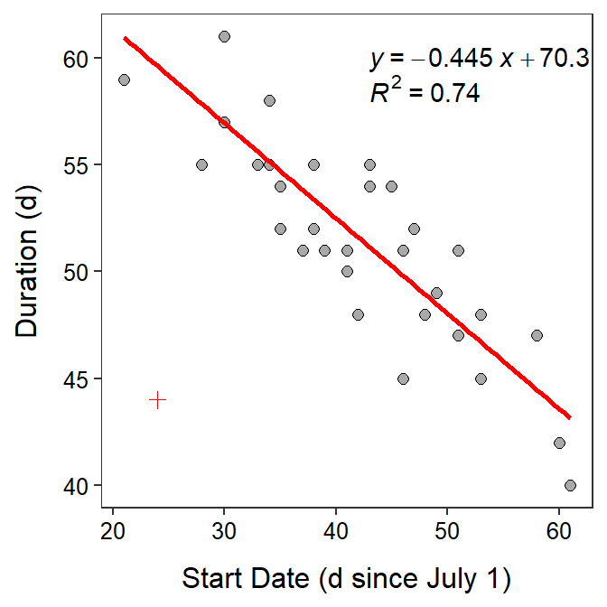
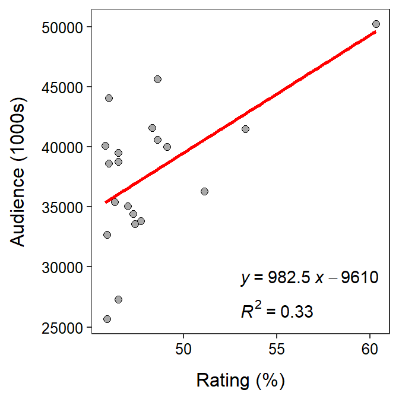
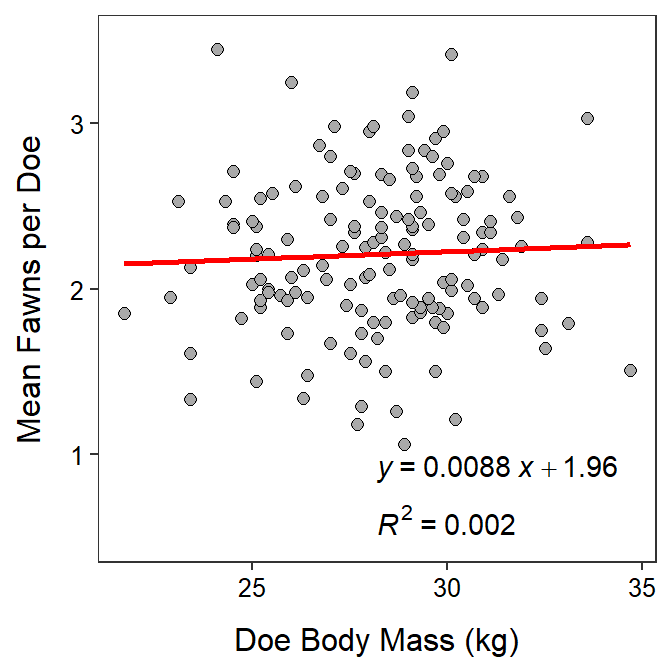

- Applications
- Avocado Sales
- Penguin Size
- Molting of Wood Thrush
- Age and Systolic Blood Pressure
- TV Ratings
- Deer Fawns
Avocado Sales
 Marketers examined the relationship between the price of a single organic avocado and the number of bags of those avocados sold in markets in the Great Lakes region from 2015-2017. The results are shown below.
Marketers examined the relationship between the price of a single organic avocado and the number of bags of those avocados sold in markets in the Great Lakes region from 2015-2017. The results are shown below.

Use the results for 2015 to answer the questions below.
- In terms of the variables of this problem, what is the equation of the best-fit line?
- In terms of the variables of this problem, INTERPRET the value of the slope?
- In terms of the variables of this problem, INTERPRET the value of the y-intercept?
- What is the predicted number of bags sold if the price was $1.50?
- What is the predicted body mass for a flipper length of $2.00 mm??
- What is the residual if the price was $1.60 and 105,000 bags were sold?
- What proportion of the variability in bags sold is explained by knowing the price of an avocado?
- What is the correlation coefficient between the price of avocado and the number of bags sold?
- How much would you expect the number of bags sold to change if the average price increased by $0.10?
- What aspect of this regression analysis concerns you (i.e., consider the regression assumptions)?
Penguin Size
 Kirsten Gorman examined various aspects of three species of penguins (Adelie, Chinstrap, and Gentoo) on Palmer Island, Antarctica. In one part of her research she examined the relationship between flipper length (mm) and body mass (g) with the hope of being able to predice body mass from flipper length. The results of her analysis are shown below.
Kirsten Gorman examined various aspects of three species of penguins (Adelie, Chinstrap, and Gentoo) on Palmer Island, Antarctica. In one part of her research she examined the relationship between flipper length (mm) and body mass (g) with the hope of being able to predice body mass from flipper length. The results of her analysis are shown below.

Use the results for CHINSTRAP penguins to answer the questions below.
- In terms of the variables of this problem, what is the equation of the best-fit line?
- In terms of the variables of this problem, INTERPRET the value of the slope?
- In terms of the variables of this problem, INTERPRET the value of the y-intercept?
- What is the predicted body mass for a flipper length of 200 mm?
- What is the predicted body mass for a flipper length of 160 mm??
- What is the residual if the body mass is 3000 g and the flipper length is 190 mm?
- What is the correlation coefficient between flipper length and body mass?
- What proportion of the variability in body mass is explained by knowing the flipper length?
- How much would you expect the body mass to change if the flipper length decreased by 25 mm?
- What aspect of this regression analysis concerns you (i.e., consider the regression assumptions)?
Molting of Wood Thrush
 Vega Rivera et al. (1998) examined the relationship between the duration of molt and the date of molt start (measured in days since July 1) for wood thrush (Hylocichla mustelina). A recreation of their results is shown below (note that the outlier marked by a “+”" in the scatterplot was ignored in the calculation of the best-fit line). Use these results to answer the questions below.
Vega Rivera et al. (1998) examined the relationship between the duration of molt and the date of molt start (measured in days since July 1) for wood thrush (Hylocichla mustelina). A recreation of their results is shown below (note that the outlier marked by a “+”" in the scatterplot was ignored in the calculation of the best-fit line). Use these results to answer the questions below.

- What is the explanatory variable?
- What is the response variable?
- In terms of the variables of this problem, what is the equation of the best-fit line?
- In terms of the variables of this problem, interpret the value of the slope.
- In terms of the variables of this problem, interpret the value of the intercept.
- What is the predicted molt duration if the molt starts on September 10 (71 d since July 1)?
- What is the residual if molt duration is 48 d and the start date is Aug. 12 (43 d since July 1)?
- What is the correlation between molt duration and molt start date?
- What proportion of the variability in molt duration is explained when molt start date is 37?
- What proportion of the variability in molt duration is explained when molt start date is 57?
- What would happen to the value of the slope if the outlier was NOT ignored?
Age and Systolic Blood Pressure
 The age (in years) and systolic blood pressure were measured for 32 white males over the age of 40. The researchers wanted to determine if systolic blood pressure increased with increasing age. Thus, they computed the regression depicted in the fitted-line plot below. Use these results to answer the questions below.
The age (in years) and systolic blood pressure were measured for 32 white males over the age of 40. The researchers wanted to determine if systolic blood pressure increased with increasing age. Thus, they computed the regression depicted in the fitted-line plot below. Use these results to answer the questions below.
- Which is the explanatory variable?
- Which is the response variable?
- In terms of the variables of this problem, what is the equation of the best-fit line?
- In terms of the variables of this problems, interpret the value of the intercept.
- In terms of the variables of this problems, interpret the value of the slope.
- If male A is 3 years younger than male B, how much difference do you expect to see in their systolic blood pressures?
- What is the predicted systolic blood pressure for a 70-year-old male?
- What is the residual for a a 50-year-old male with a SBP of 131?
- What is the correlation coefficient between Age and SBP?
- What proportion of the variability in SBP is explained by knowing the person’s AGE?
- What is the predicted systolic blood pressure for a 55-year-old male?
TV Ratings
 There are at least two ways that special TV programs could be rated, and both are of interest to advertisers – the estimated size of the audience and the percentage of TV-owning households that tuned into the program. Use the results below for the 20 all-time top-rated programs to determine if the estimated size of the audience can be predicted from the percentage of TV-owning households tuned into the program.
There are at least two ways that special TV programs could be rated, and both are of interest to advertisers – the estimated size of the audience and the percentage of TV-owning households that tuned into the program. Use the results below for the 20 all-time top-rated programs to determine if the estimated size of the audience can be predicted from the percentage of TV-owning households tuned into the program.

- What did the researchers consider the response variable to be?
- What is the equation of the best-fit line in terms of the variables of the problem?
- Interpret the value of the slope in terms of the variables of the problem.
- What is the predicted audience size for a show with a rating of 40.1%?
- What is the residual for a show with a rating of 55 and an audience size (1000s) of 40000?
- What proportion of the variability in audience size is explained by known the rating percentage?
- What is the correlation between audience size and rating percentage?
- What are two things that bother you about this analysis as it is presented here? Be specific!
Deer Fawns
 Wildlife ecologists in Texas wanted to determine if the number of fawns born to each doe could be explained by the doe’s body mass (Ginnett and Young 2000). As part of their study, the researchers recorded the mean number of fawns born to a doe (over a period of time) and the body mass of the doe (kg). Use the results in the following graph to explain the relationship to answer the questions below.
Wildlife ecologists in Texas wanted to determine if the number of fawns born to each doe could be explained by the doe’s body mass (Ginnett and Young 2000). As part of their study, the researchers recorded the mean number of fawns born to a doe (over a period of time) and the body mass of the doe (kg). Use the results in the following graph to explain the relationship to answer the questions below.

- Which is the explanatory variable?
- Which is the response variable?
- Express the equation of the best-fit line in terms of the variables of the problem.
- Interpret the slope of the best-fit line in terms of the variables of the problem.
- If a doe weighed 45 kg, how many fawns on average would you expect her to have?
- If a doe weighing 32 kg gave birth to an average of 1.9 fawns, what is the residual for this doe?
- What is the correlation coefficient between mean number of fawns born and doe body mass?
- How much of the variability in the mean number of fawns born is explained by knowing the body mass of does?
- If body mass increases by 5 kg, how many more fawns can you expect that doe have?
- Do you have any concerns about the strength of this relationship?